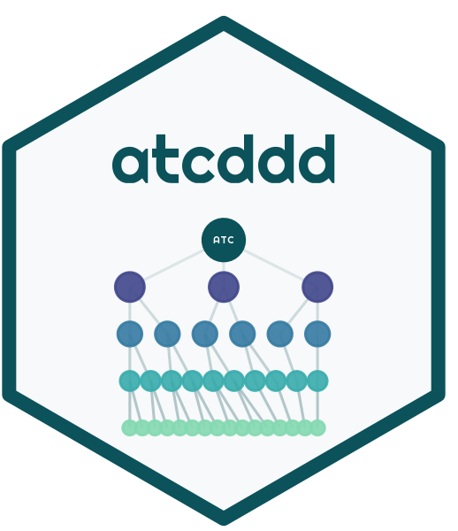
atcddd
Work with ATC Drug Classification Codes in R


🧬 A complete R toolkit for the WHO Anatomical Therapeutic Chemical (ATC) classification system and Defined Daily Doses (DDD).
Offline drug name resolution · Brand synonyms · Fuzzy matching · DDD computation · Hierarchy navigation · Clinical text extraction
✨ What is atcddd?
Imagine you’re a pharmacoepidemiologist with a list of drug names — aspirin, lipitor, metformin — and you need their ATC codes and Defined Daily Doses. You could browse the WHO website one drug at a time… or you could type:
library(atcddd)
resolve_atc("aspirin", source = "local")And get back: N02BA01 · acetylsalicylic acid · DDD: 3 g (Oral) — instantly, offline.
atcddd bundles the complete WHO ATC/DDD index (6,982 codes, 6,218 DDD entries) so you can search, resolve, compute, and explore without ever needing an internet connection. It also knows brand names (lipitor → atorvastatin), handles typos (acetominophen → paracetamol), and can compute DDDs from raw prescription data.
🧪 In 30 Seconds
|
🔍 Instant drug lookup
|
💊 Compute DDDs from prescriptions
|
|
🌳 Explore the hierarchy
|
📝 Extract from clinical notes
|
📊 What’s in the Data?
The WHO ATC classification organises every drug into a 5-level tree, from broad anatomical groups down to individual substances:
| Level | Pattern | Example | Meaning |
|---|---|---|---|
| 1 · Anatomical | N |
N | Nervous system |
| 2 · Therapeutic | N02 |
N02 | Analgesics |
| 3 · Pharmacological | N02B |
N02B | Other analgesics & antipyretics |
| 4 · Chemical | N02BE |
N02BE | Anilides |
| 5 · Substance | N02BE01 |
N02BE01 | Paracetamol |
6,982 codes · 6,218 DDD entries — bundled with the package, crawled fresh from WHO in July 2026.
🎨 Visualising the WHO ATC/DDD Index
How many drugs have a Defined Daily Dose?
Not all drugs have DDDs — topicals, ophthalmics, and fixed-dose combinations typically don’t. Systemic drugs like anti-infectives and nervous system agents do. The chart below tells the story:
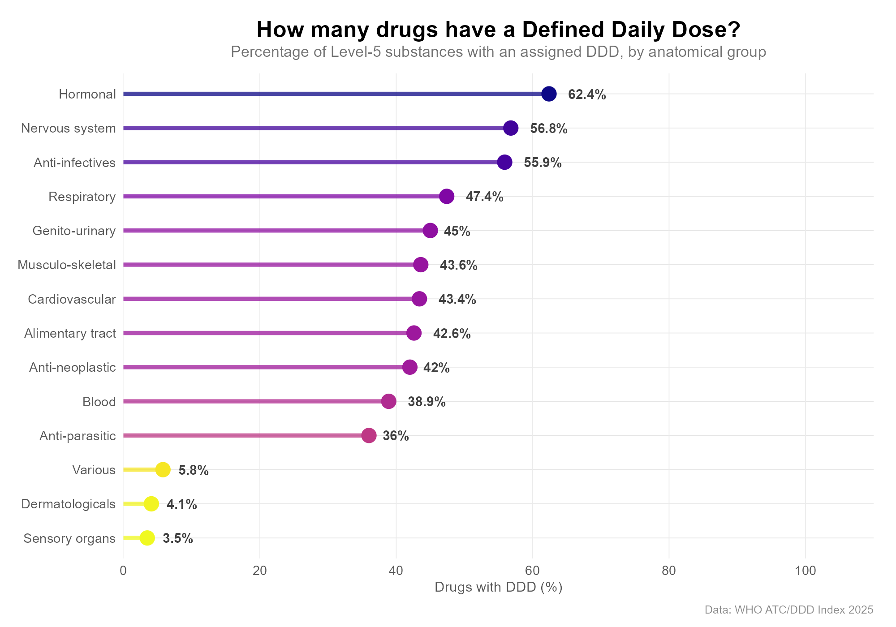
How the ATC tree fans out
From 14 anatomical groups to over 6,000 individual substances — the ATC tree fans out like a pyramid, each level branching into more specific categories:
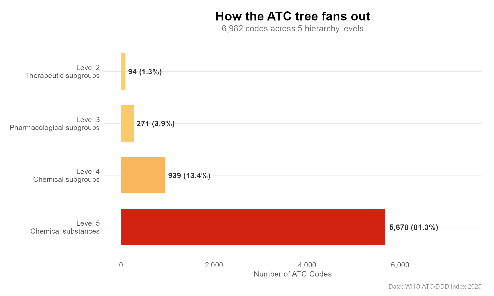
The same drug, different routes
DDDs can be dramatically different depending on whether a drug is given orally, by injection, or rectally. These small multiples show 8 drugs with 3+ route-specific DDDs:
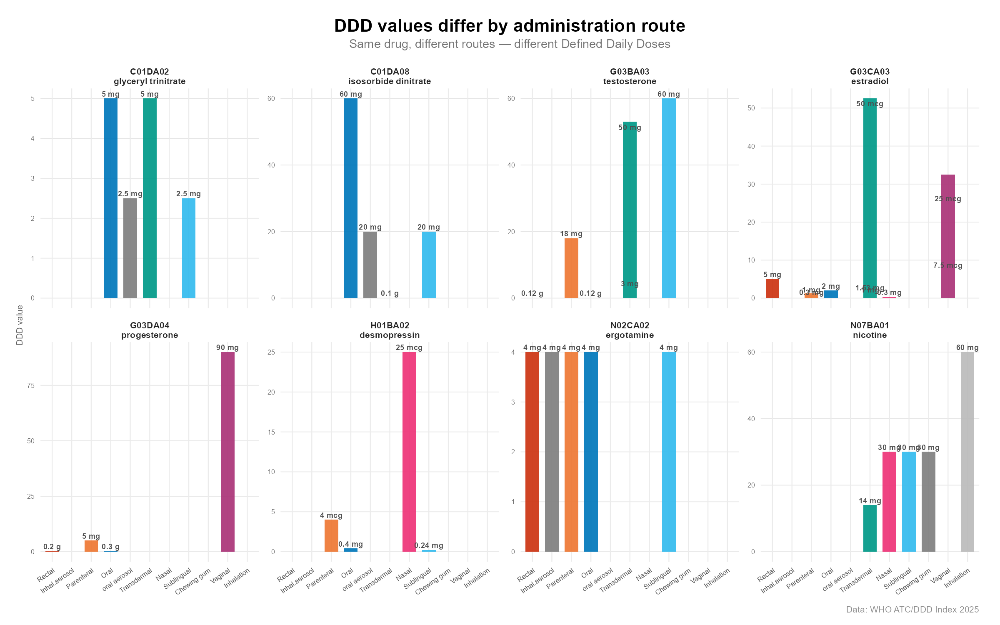
DDD coverage × route, across all drug classes
This heatmap shows a clear pattern: oral and parenteral routes are well-covered across most systemic groups, while topical routes have sparse coverage across the board:
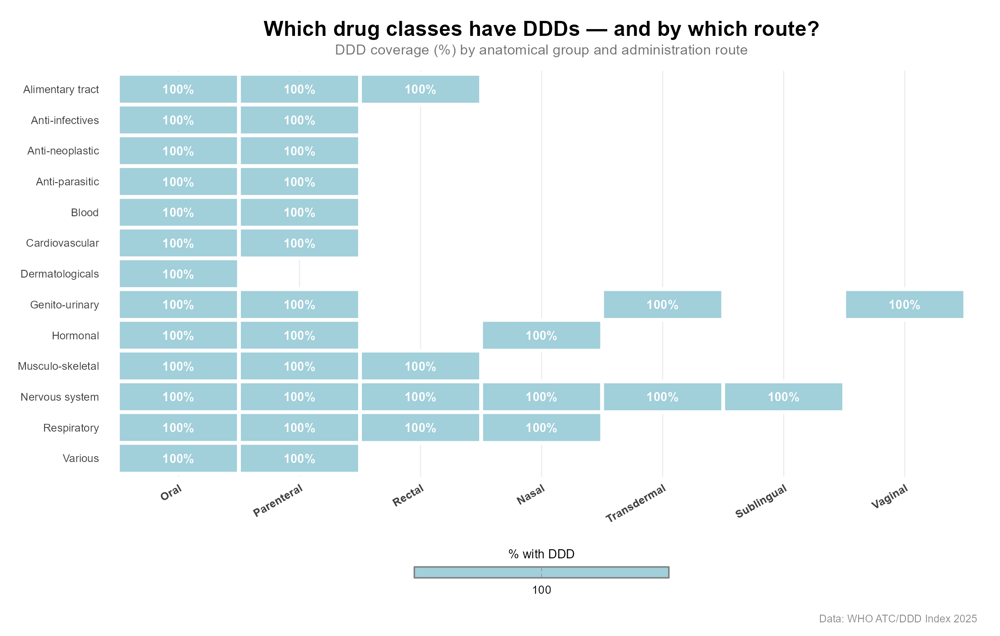
The ATC hierarchy as a network
Every ATC code is a node in a beautiful bipartite tree. These visualisations — built with the Repurp package — show the hierarchy in different styles.
| Cardiovascular System | All ATC Groups (L1–L4) |
|---|---|
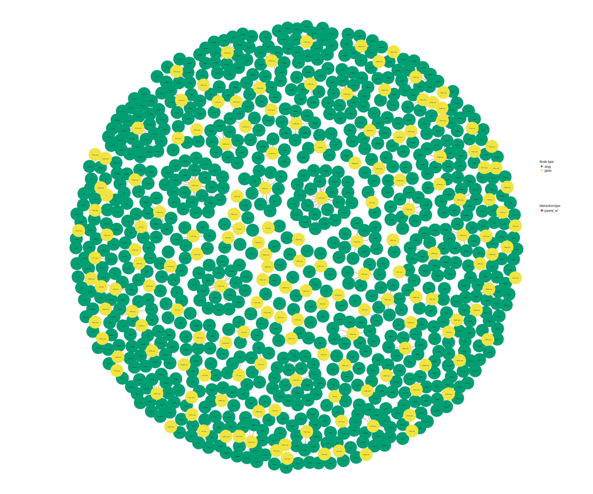 |
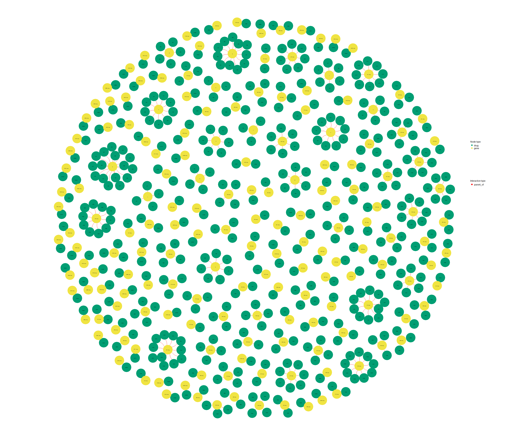 |
| 830 connections, igraph + Fruchterman-Reingold | 445 connections across all 14 anatomical groups |
| Nervous System (igraph) | CV Top Level (ggraph) |
|---|---|
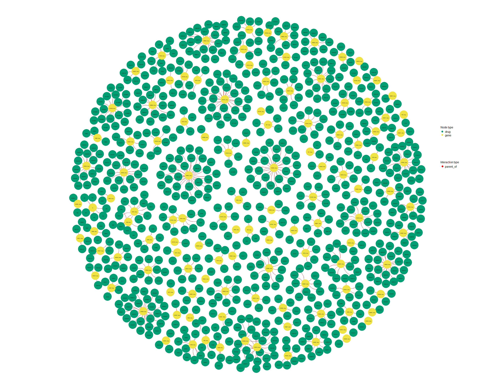 |
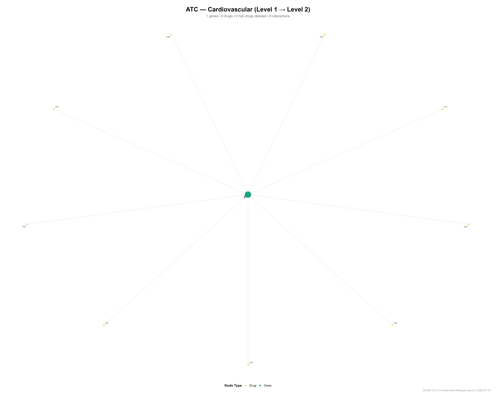 |
| 787 connections in the nervous system branch | L1→L2 with publication-quality ggrepel labels |
| Chord Diagram (circlize) | Drug × Gene Heatmap |
|---|---|
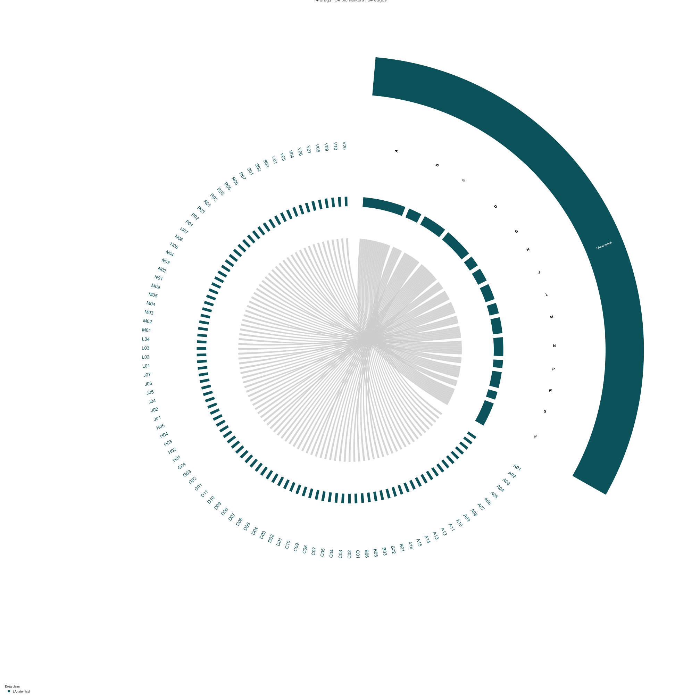 |
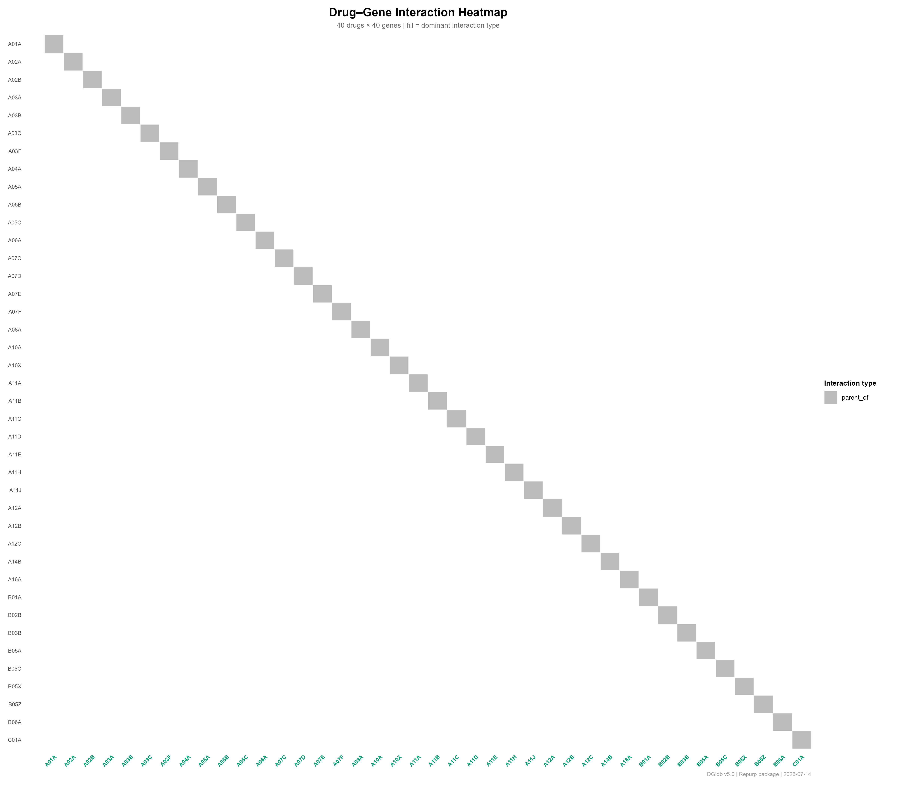 |
| ATC Level 1 → Level 2, circular layout with coloured sectors | Interaction matrix of 200 therapeutic–chemical connections |
| Gene × Drug-Class Dot Matrix |
|---|
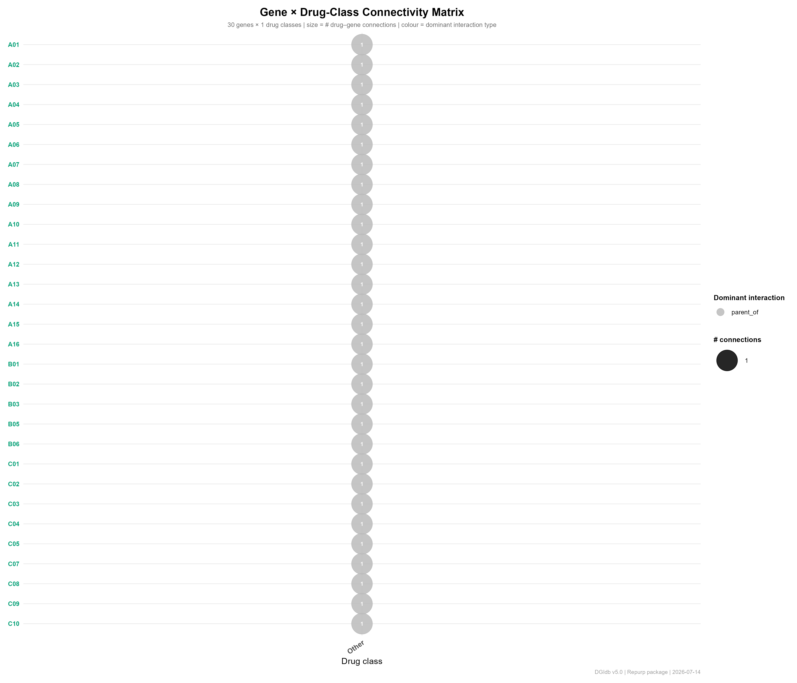 |
| Bubble plot: each dot encodes a parent–child connection, sized by density |
These networks show how 14 anatomical roots branch into therapeutic subgroups, chemical classes, and thousands of individual drugs — from a single table of parent–child relationships.
🔍 What Can You Do?
🔍 Drug Name Search & Resolution — Your everyday workflow
| Function | What it does |
|---|---|
resolve_atc("aspirin") |
Drug name → ATC code + DDD. Works offline. |
resolve_batch(c("a", "b")) |
Vectorised resolution for many drugs at once |
search_drug("statin") |
Ranked search: synonym → exact → prefix → substring |
fuzzy_match_drug("asprin") |
Levenshtein distance for typos |
atc_from_text("...") |
Extract drug names from clinical notes |
atc_add_synonym("eliquis", "B01AF02") |
Add your own brand name mappings |
# Your daily workflow — offline, instant
resolve_batch(c("aspirin", "lipitor", "metformin"), source = "local")💊 DDD Computation — From prescriptions to Defined Daily Doses
| Function | What it does |
|---|---|
compute_ddd() |
Convert prescription data into DDDs per drug |
compute_did() |
DDDs per 1000 inhabitants per day (DID) |
ddd_availability() |
Which groups have DDDs assigned |
ddd_route_comparison("N02BE01") |
Compare DDDs across administration routes |
prescriptions <- data.frame(
atc_code = c("N02BA01", "C10AA05", "A10BA02"),
quantity = c(100, 30, 90),
strength = c(500, 20, 500)
)
ddd <- compute_ddd(prescriptions)
compute_did(ddd, population = 10000, days = 30)Unit conversion is automatic — mg ↔︎ g ↔︎ mcg, U ↔︎ TU ↔︎ MU. No manual maths.
🌳 Offline Hierarchy Navigation — No internet needed
| Function | What it does |
|---|---|
atc_children("C10AA", data) |
Direct children of any ATC code |
atc_descendants("C", data) |
Everything below, down to Level 5 |
atc_level("N02BE01") |
Returns the hierarchy level (1–5) |
atc_parent("N02BE01") |
The immediate parent code |
atc_children("C10AA", codes) # All statins
atc_descendants("N", codes) # All nervous system substances
atc_parent("N02BE01") # → N02BE
atc_level(c("N", "N02", "N02BE01")) # → 1, 2, 5✅ Validation & Utilities
is_valid_atc_code(c("N02BE01", "C10AA05", "garbage"))
# [1] TRUE TRUE FALSE
normalize_atc_code(" n02be01 ") # → "N02BE01"🌐 WHO Data Crawling — Live retrieval with caching
res <- atc_crawl(roots = "D", rate = 0.5, max_codes = 100)
get_atc_data("N02")
get_atc_hierarchy("N02")
atc_roots_default()📁 Data I/O & Reproducibility
atc_write_csv(res, dir = "data") # Export to CSV
atc_write_manifest(paths) # SHA256 checksums
atc_load_db() # Load bundled data into memory🎯 Why atcddd?
| Feature | atcddd | AMR (CRAN) |
|---|---|---|
| All ATC groups (not just antimicrobials) | ✅ | ❌ |
| Offline drug name lookup | ✅ | ❌ |
| Fuzzy matching (typos) | ✅ | ❌ |
| Brand name synonyms | ✅ | ❌ |
| Free-text extraction | ✅ | ⚠️ limited |
| DDD computation with unit conversion | ✅ | ❌ |
| Hierarchy tools | ✅ | ❌ |
| Bundled data | 6,982 codes | ~620 drugs |
📖 Vignettes
| Vignette | What you’ll learn |
|---|---|
| Getting Started | Install, first steps, crawl, validate |
| Navigating the ATC Hierarchy | Parents, children, descendants, ancestry |
| Working with DDDs | Understanding DDD coverage and data quality |
| Computing DDDs | Prescription data → DDDs, step by step |
📖 Citation
If you use atcddd in your work, please cite:
Van Hung (Huynh) TRAN. (2026). vanhungtran/atcddd: v0.2.0 (Version v0.2.0) [Computer software]. Zenodo. https://doi.org/10.5281/zenodo.21360365
@software{tran2026atcddd,
author = {Van Hung (Huynh) TRAN},
title = {vanhungtran/atcddd: v0.2.0},
year = {2026},
publisher = {Zenodo},
version = {v0.2.0},
doi = {10.5281/zenodo.21360365}
}🤝 Contributing
Bug reports, feature requests, and pull requests are welcome.
See CONTRIBUTING.md and the Code of Conduct.
📜 License
MIT © 2025 Lucas VHH TRAN. See LICENSE.md.
Data: WHO ATC/DDD Index © WHO Collaborating Centre for Drug Statistics Methodology. Freely available for non-commercial research. https://atcddd.fhi.no/
Built with 💊 and 🧬 for the R health data science community.